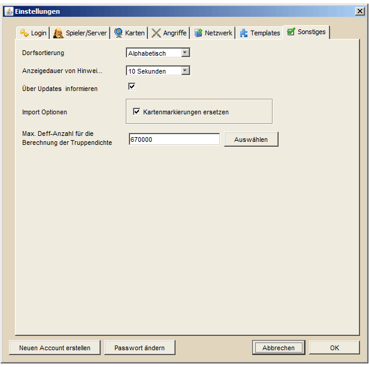

Sonstige Einstellungen |
|
|  | |
Einstellungen, die in keine andere Kategorie zu passen scheinen, tauchen unter Sonstiges auf. Die erste Einstellung regelt die Art der Dorfsortierung. Dieser Wert gilt für alle Elemente in DS Workbench, die in irgendeiner Weise Dörfer enthalten, z.B. Tabellen oder Listen. Die Standardsortierung ist Alphabetisch, alternativ kann man nach Dorfkoordinaten sortieren lassen, wobei bei gleicher X-Koordinate nach Y-Koordinaten sortiert wird. Als Letztes kann man das Look&Feel wählen, in dem sich DS Workbench präsentieren soll. Hier stehen zwei Möglichkeiten zur Verfügung, die ihr je nach Vorliebe wählen könnt. Ändert ihr das Look&Feel ist ein Neustart von DS Workbench notwendig um die Änderung wirksam werden zu lassen. |